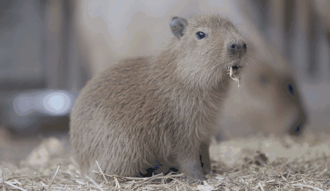

这是Mr.Z的日志
这里会有一些生活印记
经常记录生活, 有时会发现意想不到的惊喜
This is Mr.Z's log
There will be some life imprints here
Regularly recording life can sometimes lead to unexpected surprises
- On October 19, the weather was sunny.
- Today I went to Ocean Park, it was an unforgettable experience! As soon as I entered the park, I was attracted by the colorful marine creatures. Firstly, I visited a dolphin performance where clever dolphins rolled and jumped in the water, earning warm applause from the audience. Then, I walked into the aquarium and saw various types of fish, some brightly colored and some uniquely shaped, as if I were in a dreamlike underwater world.
- At lunch, I tasted fresh seafood, which tasted delicious. In the afternoon, I also experienced an exciting roller coaster, with screams echoing one after another, which was thrilling. When I left, I was filled with joy and beautiful memories, looking forward to visiting this wonderful ocean world again next time!
